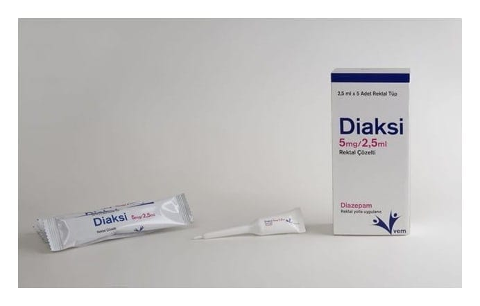

Diaksi 5 mg/2.5 ml Rektal Çözelti, 5 Adet

Ne için kullanılır
KT · Bölüm 1DİAKSİ, etkin madde olarak, diazepam içerir. Her bir rektal tüp 2,5 mL berrak, renksiz veya açık sarı renkte viskoz sıvı içermektedir. Tüpler düşük yoğunluklu polietilenden yapılmıştır. Kutu içinde 5 rektal tüp bulunmaktadır.
Diazepam, benzodiazepinler olarak bilinen ve sakinleştirici olarak kullanılan bir gruba ait bir ilaçtır ve antikonvülzanlar (istem dışı kasılmaları kontrol etmek için) veya gergin kasları gevşetmek için kullanılır. DİAKSİ, sara tedavisinde (epileptik) veya ateşli istem dışı kasılmaları (konvülziyonları) kontrol etmek için, küçük cerrahi veya diş hekimliği prosedürlerinden önce yatıştırıcı (sedasyon) için, tetanozda kas spazmları için, ağır, şiddetli, sakatlık yaratan veya aşırı stresin söz konusu olduğu kaygı (anksiyete) ve ajitasyonda ilk müdahalede, damar içi enjeksiyonun uygun olmadığı ya da istenmediği ancak hızlı etkinin gerektiği durumlarda kullanılır ve ayrıca çocuklarda acil konvülziyon tedavisinde de kullanılabilir.